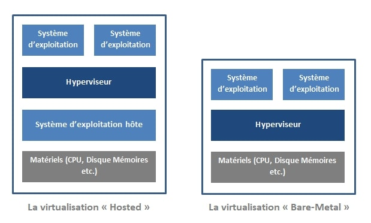

La virtualisation des serveurs

La virtualisation des serveurs consiste à séparer le système d’exploitation de matériel et de
faire fonctionner un ou plusieurs systèmes d’exploitation sur un ou plusieurs ordinateurs à l’aide d’un hyperviseur. Un hyperviseur est un logiciel, un frimware ou un équipement matériel qui ajoute une couche d’abstraction au-dessus de la couche physique.
La couche d'abstraction permet de créer des machines virtuelles qui ont accès à tous les composants matériels de la machine physique, notamment les processeurs, la mémoire, les contrôleurs de disque et les cartes réseau [2]. Chaque machine virtuelle exécute un système d'exploitation complet et distinct. Grâce à la virtualisation, les entreprises peuvent désormais réduire le nombre de serveurs physiques nécessaires.
La couche d'abstraction permet de créer des machines virtuelles qui ont accès à tous les composants matériels de la machine physique, notamment les processeurs, la mémoire, les contrôleurs de disque et les cartes réseau [2]. Chaque machine virtuelle exécute un système d'exploitation complet et distinct. Grâce à la virtualisation, les entreprises peuvent désormais réduire le nombre de serveurs physiques nécessaires.
Types d’hyperviseurs
Il y a d’innombrables manières de placer des machines virtuelles sur des équipements
matérielles. On peut les classer selon trois grandes catégories décrites dans la figure.
- • L’hyperviseur de type 1 « ou bare metal » : Il opère directement sur le hardware, et devient de ce fait l’outil de contrôle du système d’exploitation. Les systemes d’exploitations invités s’exécutent alors par-dessus cet hyperviseur. Quelques exemples de tels hyperviseurs plus récents sont Xen, KVM, Oracle VM, ESX Server de VMware.
- • L’hyperviseur de type 2 « Hosted » : Un hyperviseur de Type 2 est un logiciel qui s’exécute à l’intérieur d’un autre système d’exploitation. Un système d’exploitation invité s’exécutera donc en troisième niveau audessus du matériel. Quelques exemples de tels hyperviseurs sont VMware Workstation, VMware Fusion, l’hyperviseur open source QEMU, les produits Microsoft Virtual PC et Virtual Server, VirtualBox d’Oracle, de même que Parallels Workstation de SWsoft et Parallels Desktop.
Type d'hyperviseurs
Avantage de la virtualisation des serveursLes avantages de la virtualisation des serveurs sont les suivants :
- • Amélioration de l’efficacité des serveurs
- • Gestion des charges de travail grâce au déploiement de VM et des services réseaux
- • Gain des performances du réseau et flexibilité :
- - Déplacement de VM
- - Equilibrage de charge
- - Agilité de l’infrastructure réseau
- - Réduction du temps de déploiement : Time To Market
- - Chaînage de service en déployant les VMs par application
Technologies similaires :La virtualisation des reseaux
L'automatisation des reseaux
Le principe de SDN
Le principe de NFV
Le principe de DevOps